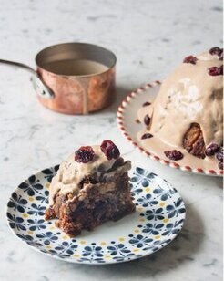

Christmas recipe inspiration
Stuffed Butternut Squash
Monday 16th November 2020

Ingredients
- 1 large butternut squash, about 1.2kg
- ½ tbsp olive oil
- 1 red onion, finely chopped
- 3 garlic cloves, crushed
- 1½ tsp ground cinnamon
- 100g baby leaf spinach
- 1 x 250g pouch cooked grains or rice (we used Merchant Gourmet Glorious Grains) - use a gluten-free mix if required
- 1 x 80g pack pomegranate seeds (or seeds of 1 fruit)
- 25g toasted pine nuts
- 1 x 30g pack coriander, chopped
- 125g vegan feta, crumbled
Method
- Preheat the oven to 200°C, fan 180°C, gas 6. Slice the butternut squash in half end-to-end and scrape out the seeds. Place both halves onto a lined oven tray, cut-side down. Roast for 40-50 minutes, until just tender when you pierce the flesh with a small sharp knife. Take care not to overcook the squash as it’ll cook further once returned to the oven. Set aside to cool.
- Flip the cooled squash halves over. Scoop most of the tender flesh out into a bowl, leaving a 1.5cm ‘shell’ of squash around the edges. Season the hollowed- out squash halves.
- Heat 1⁄2 tablespoon of oil in a large saucepan or lidded frying pan, then fry the onion over a medium heat for 6-8 minutes, stirring occasionally, until soft. Add the garlic and cinnamon and cook, stirring, for a further 2 minutes. Stir through the spinach, cover with a lid, and leave to wilt for 2 minutes. Next, add the grains, scooped-out squash, pomegranate seeds, pine nuts and coriander. Break down the squash with your spoon and mix everything together well.
- In a small bowl, whisk together the dressing ingredients. Stir this through the grain mixture and lastly fold through the feta. Season to taste.
- Divide the filling mixture between the squash halves, pressing it down so it is compacted. Put the two halves back together to re- make the butternut squash shape and secure with loops of kitchen string tied around the squash.
- Return to the oven tray and bake for 30-40 minutes until the squash is completely tender and the filling is piping hot. To serve, slice the squash into thick rounds, using a wide spatula to help hold each slice together, and discard the string.
This recipe can be found here: Stuffed Butternut Squash
Deliciously Ella's Christmas pudding with cashew custard
Monday 16th November 2020

Ingredients
For the custard- 50g raw cashews
- 1 tsp vanilla powder
- 2 tbsp maple syrup
- 50g dried cranberries, halved
- 50g dried apricots, quartered
- 50g raisins
- 50g sultanas
- 75g medjool dates, pitted and chopped
- 1 apple, cored and chopped into 1cm cubes
- 1½ tbsp milled linseed, soaked in 3 tbsp water for 10 minutes
- 50g buckwheat flour
- 150g almond flour
- 100g chopped mixed nuts
- zest and juice of 1 small orange
- 3 tbsp date syrup
- 2 tbsp maple syrup
- 2 tbsp coconut sugar
- 1 tsp ground ginger
- 2 tsp ground cinnamon
- 1 tsp ground nutmeg
- 1 tsp vanilla powder
Method
- Soak the cashews in water for 2-3 hours.
- Meanwhile, mix together all the pudding ingredients in a bowl. Line a 2-litre glass pudding bowl with baking paper. Spoon in the pudding mix, then place a large circle of baking paper over the top and secure it to the bowl with a piece of string.
- Put the bowl on an upturned saucer inside a wide pan, and fill with boiling water so that it comes halfway up the bowl. Cover with a lid, then simmer for 2 hours. Check the water level every half hour and top up as necessary.
- Meanwhile, finish the custard. Drain then blend the cashews in a food processor with the vanilla, maple syrup and approx 70ml water.
- Gradually add another 70ml (or more, or less, to your desired thickness).
- Blend for around 5 minutes until completely smooth.
- Once the pudding is cooked, turn it out on to a plate and let it stand for about 10 minutes.
- Heat the custard in a pan, then drizzle over the pudding and serve.
This recipe can be found here: Deliciously Ella's Christmas pudding with cashew custard

Wrap up warm with a delicious autumnal soup

Treat yourself without feeling guilty, tuck in to guilt-free desserts
Christmas recipe inspiration!